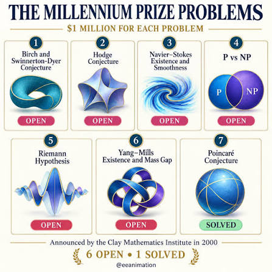
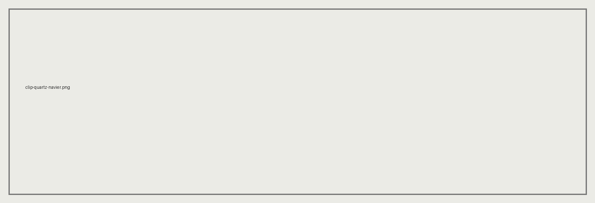
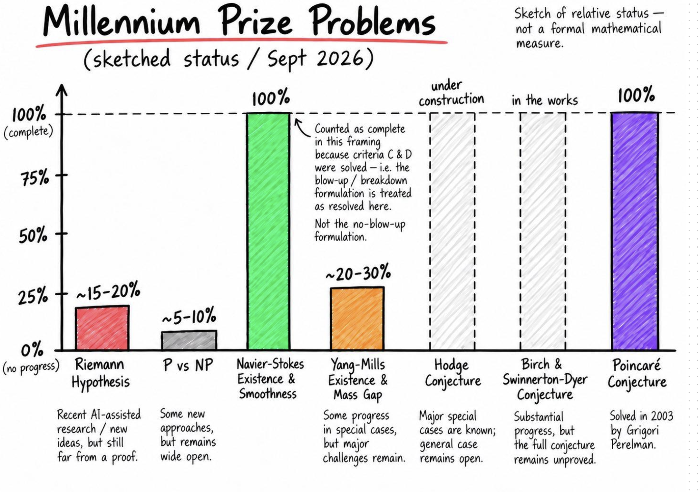
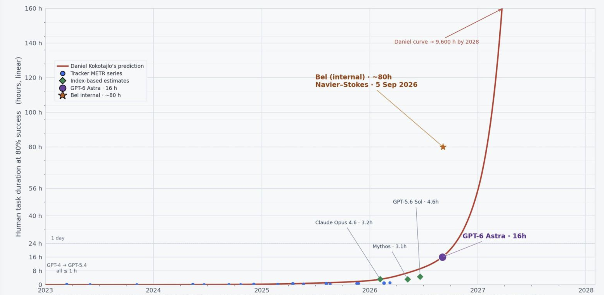
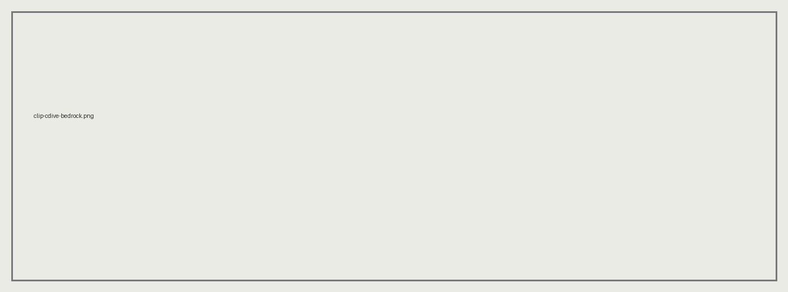
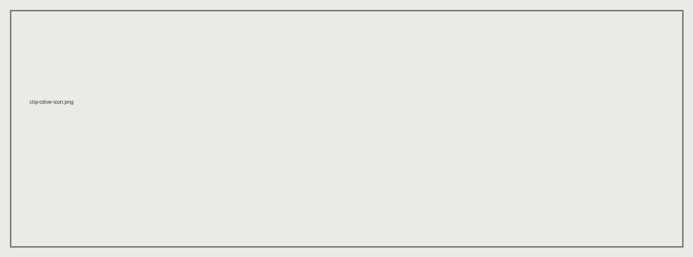
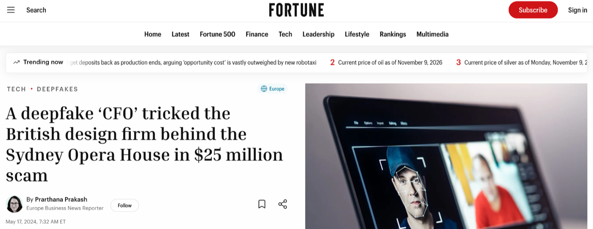
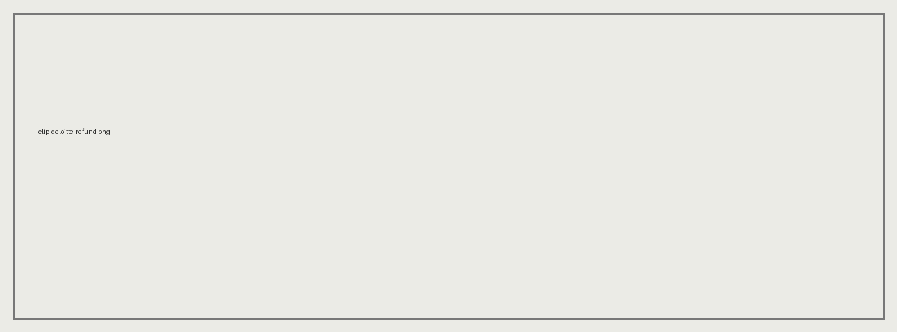
Rules. No intelligence.
Cheap, exact, auditable.
The same input always gives the same output.
The same fixed flow, with intelligence at the steps that read, classify or draft.
You still decide the path.
Intelligence decides the next step.
Powerful, metered, and never twice the same.
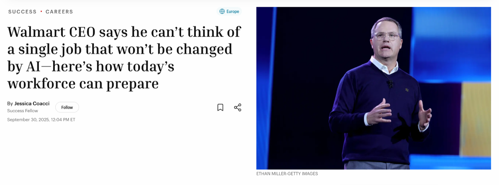
Space to play or pause · → to continue
The video could not load. Check your connection or watch it on Figure's website.
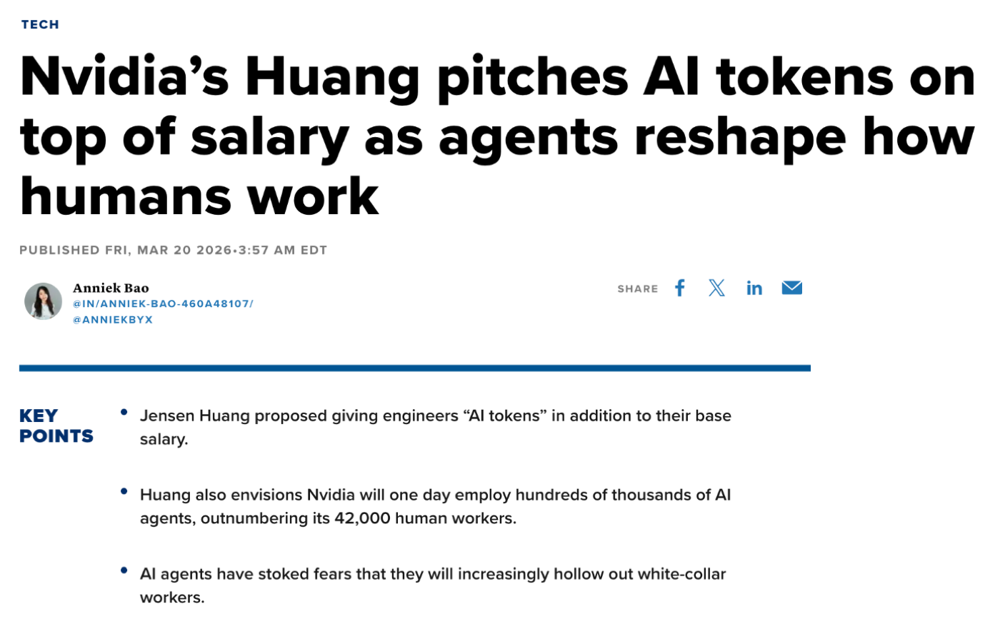
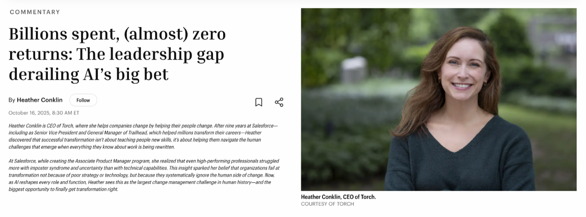
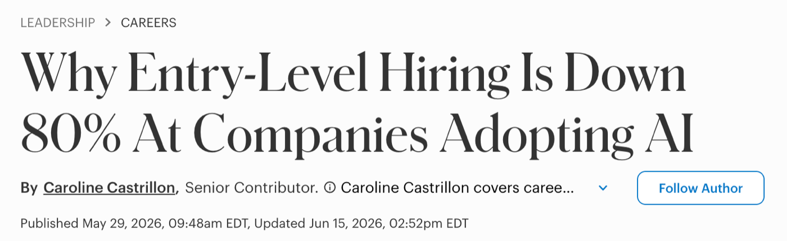
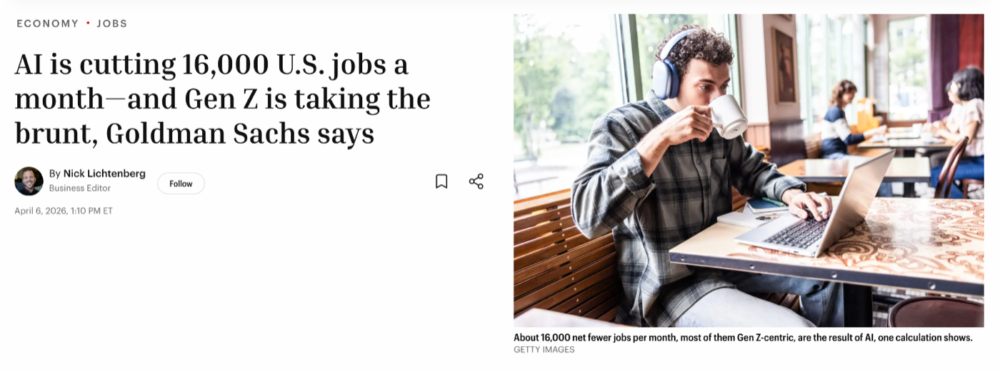
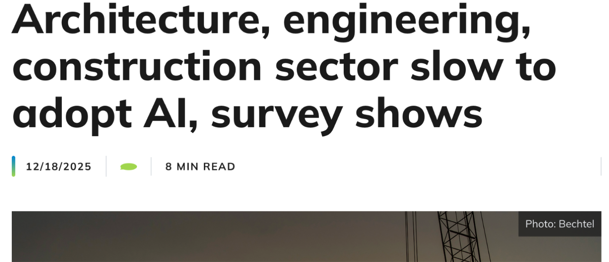
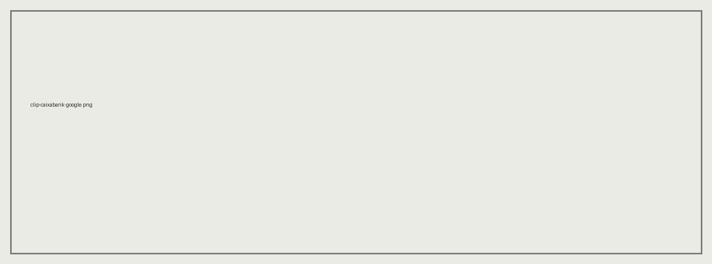